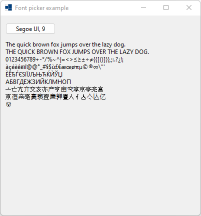
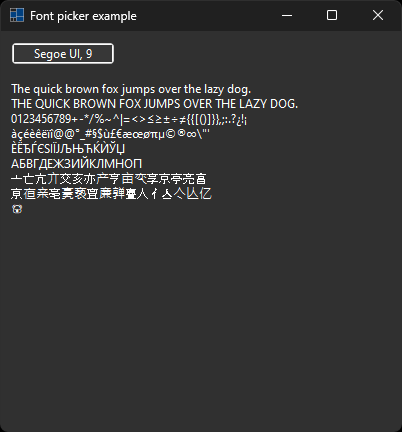
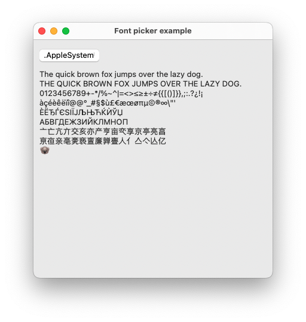
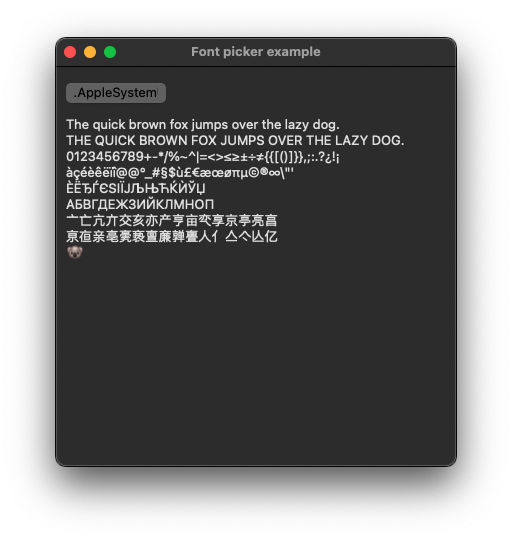
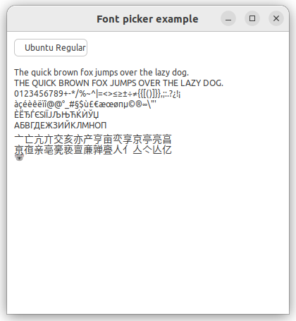
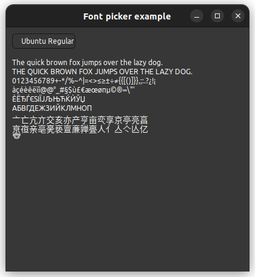

|
xtd
0.2.0
|
font_picker.cpp
demonstrates the use of xtd::forms::font_picker dialog.
- Windows
- 

- macOS
- 

- Gnome
- 

#include <xtd/forms/application>
#include <xtd/forms/font_picker>
#include <xtd/forms/form>
#include <xtd/forms/label>
using namespace xtd;
using namespace xtd::forms;
public:
form1() {
text("Font picker example");
client_size({400, 400});
controls().push_back_range({picker1, label1});
auto_scroll(true);
picker1.location({10, 10});
picker1.color(label1.fore_color());
picker1.font(label1.font());
picker1.font_picker_changed += [&] {
label1.fore_color(picker1.color());
label1.font(picker1.font());
};
label1.location({10, 50});
label1.auto_size(true);
label1.text(u8"The quick brown fox jumps over the lazy dog.\n"
u8"THE QUICK BROWN FOX JUMPS OVER THE LAZY DOG.\n"
u8"0123456789+-*/%~^&|=<>≤≥±÷≠{{[()]}},;:.?¿!¡\n"
u8"àçéèêëïî@@°_#§$ù£€æœø𵩮∞\\\"'\n"
u8"\u0400\u0401\u0402\u0403\u0404\u0405\u0406\u0407\u0408\u0409\u040a\u040b\u040c\u040d\u040e\u040f\n"
u8"\u0410\u0411\u0412\u0413\u0414\u0415\u0416\u0417\u0418\u0419\u041a\u041b\u041c\u041d\u041e\u041f\n"
u8"\u4ea0\u4ea1\u4ea2\u4ea3\u4ea4\u4ea5\u4ea6\u4ea7\u4ea8\u4ea9\u4eaa\u4eab\u4eac\u4ead\u4eae\u4eaf\n"
u8"\u4eb0\u4eb1\u4eb2\u4eb3\u4eb4\u4eb5\u4eb6\u4eb7\u4eb8\u4eb9\u4eba\u4ebb\u4ebc\u4ebd\u4ebe\u4ebf\n"
u8"\U0001F428");
}
private:
font_picker picker1;
label label1;
};
auto main()->int {
application::run(form1 {});
}
static void run()
Begins running a standard application message loop on the current thread, without a form.
xtd::forms::style_sheets::control label
The label data allows you to specify the box of a label control.
Definition: label.h:23
xtd::forms::style_sheets::control form
The form data allows you to specify the box of a form control.
Definition: form.h:21
@ text
The xtd::forms::status_bar_panel displays text in the standard font.
The xtd::forms namespace contains classes for creating Windows-based applications that take full adva...
Definition: about_box.h:13
The xtd namespace contains all fundamental classes to access Hardware, Os, System,...
Definition: system_report.h:17
Generated on Sun Oct 1 2023 07:46:00 for xtd by Gammasoft. All rights reserved.